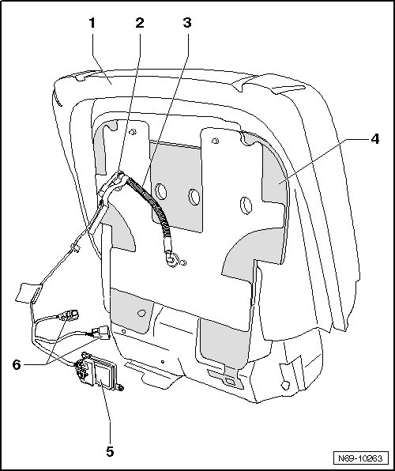

Passive Occupant Detection System Repair Kit Components
Passive Occupant Detection System Repair Kit Components
Seat occupied recognition controls automatic passenger airbag deactivation.
This equipment is only installed on vehicles released in the USA.
If there is a malfunction on a part of the system, it must be replaced with components from the repair kit. Repair set is already matched to characteristics of vehicle to be repaired and contains the following components.
CAUTION!
Never use repair kit components separately.

1 Upholstery of front seat cushion
2 Seat Occupied Recognition Pressure Sensor (G452)
3 Pressure hose
4 Passive Occupant Detection System Mat
5 Seat Occupied Recognition Control Module (J706)
6 Front seat wiring harness
CAUTION!
Read and follow instructions for use on package of repair set. Misapplication may lead to malfunction of system.